측량및지형공간정보기사 (2009-05-10 기출문제)
1과목: 측지학 및 위성측위시스템
1. 위성의 기하학적 분포상태는 의사거리에 의한 단독측위의 선형화된 관측방정식을 구성하고 정규방정식을 구성하고 정규방정식의 역행렬을 활용하면 판단할 수 있다. 관측점 좌표 x, y, z 및 수신기 시계 t에 대한 Cofactor 행렬(Q)의 대각선 요소가 각각 qxx=0.5. qyy=2.2, q=2.5, qzz=2.5, qtt=1.3일 때 관측점에서의 GDOP는?
- 3.575
- 3.609
- 6.500
- 13.030
(정답률: 50%)

2. 다음 중 지심 좌표의 방식으로 위성 측량에서 쓰이는 좌표계는?
- UTM 좌표
- WGS 좌표
- 천문 좌표
- 베셀 좌표
(정답률: 42%)
3. GPS에 의한 2등기준점 측량에서 Session의 관측시간은 최소 얼마 이상으로 해야 하는가?
- 1시간
- 4시간
- 8시간
- 24시간
(정답률: 85%)
4. 측지학에 대한 설명으로 옳은 것은?
- 지상으로부터 발사 또는 방사된 전파를 인공위성으로 흡수하여 해석함으로써 지궂자원 및 환경을 해결할 수 있는 것을 위성측량이라 한다.
- 천제의 고도, 방위각 및 시각을 관측하여 관측지점의 지리학적 경위도 및 방위를 구하는 것을 천문측량이라 한다.
- 기하학적 측지학은 지표상의 모든 점간의 상호관계를 결정하고 지구 내부구조 및 특성을 연구하는 분야이다.
- 지구표면상의 길이 및 각도 그리고 높이의 관측에 의한 3차원 좌표결정을 위한 측량만을 말한다.
(정답률: 64%)
5. 임의 지점에서 GPS 관측을 수행하여 타원체고(h) 57.234m를 획득하였다. 그 지점의 지구중력장 모델로부터 산정한 지오이드고(N)가 25.578m라 한다면 정표고(H)는?
- -31.656m
- 31.656m
- 57.234m
- 82.812m
(정답률: 알수없음)
6. 지구는 동서가 길고 남북이 짧은 회전타원체임을 증명할 수 있는 사실에 대한 설명으로 잘못된 것은?
- 중력의 값이 극으로 갈수록 커진다.
- 곡율반경이 극으로 갈수록 커진다.
- 추시계는 적도로 가져갈수록 빨라진다.
- 위도 1° 사이의 거리는 극으로 갈수록 길어진다.
(정답률: 59%)
7. 실제 관측된 중력값과 기준중력식에 의한 이론값과의 차이를 무엇이라 하는가?
- 중력차이
- 중력이상
- 중력변화
- 중력상수
(정답률: 84%)
8. 다음 중 GPS측량에 있어서 사이클슬립(cycle slip)의 주된 원인은?
- 위성의 높은 고도각
- 낮은 신호 잡음
- 나무, 교량 밑 등의 장애물
- 높은 신호 강도
(정답률: 80%)
9. 천문측량에서 동일고도의 두 별을 관측하여 각각의 적위, 천정거리에 의해 위도를 결정하는 방법은?
- 베르누이법
- 탈코트법
- 뉴턴법
- 주극성법
(정답률: 79%)
10. 두 점의 평균해면(타원체면)상의 거리가 3000.525m이라면 이 두 점에 대하여 평균표고 800m 지역에서의 거리는 얼마인가? (단, R-6370km로 가정)
- 6768.845m
- 3000.902m
- 3000.180m
- 2999.098m
(정답률: 74%)
11. 다음 중 투영에 대한 설명으로 틀린 것은?
- 투영은 등거리투영, 등적투영과 등각투영으로 크게 구분할 수 있다.
- 등각투영에서는 대상체들의 면적은 일정하나 모양은 변화가 생긴다.
- 원뿔투영은 지구 회전타원체를 원뿔의 표면에 투영한 후 이를 절개하여 평면으로 사용하는 투영이다.
- TM투영은 표준형 머케이터 투영에서 지구를 90도 회전시켜 중앙자오선이 원기둥면에 접하도록 하는 투영이다.
(정답률: 90%)
12. 다음 중 지자기 측정과 관련된 설명으로 옳은 것은?
- 자화(磁化)된 물질은 외부 자기장과 자화의 방향 등에 따라 상자성체, 반자성체, 강자성체 등으로 구분된다.
- 강자성체는 자기장이 제거 되면 자화하지 않는 물질을 말한다.
- 반자성체는 외부자기장이 가해지면 전체적으로 외부 자기장과 같은 방향으로 미약하게 나타난다.
- 부게이상(bouguer anomaly)은 지구 자기의 변화에 의한 것이다.
(정답률: 77%)
13. 다음 중에서 위성의 궤도요소로서 적합하지 않은 것은?
- 궤도의 장반경
- 이심률
- 궤도 경사각
- 위성의 고도
(정답률: 80%)
14. 다음 중 중력측정시에 시행되어야 하는 필수적인 사항이 아닌 것은?
- 중력기준점과 각 측점 간의 상대중력값을 정확하게 측정하여야 한다.
- 각 측점에서 측정시간을 기록하여야 한다.
- 각 측점의 고도를 측정하여야 한다.
- 측점의 기압을 정확하게 측정하여야 한다.
(정답률: 70%)
15. 지구자기가 생기는 주된 원인으로 옳은 것은?
- 멘틀과 외핵의 밀도차이
- U238의 붕괴
- 외핵이 액체이기 때문에
- 내핵이 고체이기 때문에
(정답률: 82%)
16. 다음 중 가장 정확하게 위치를 결정할 수 있는 자료처리법은?
- 코드를 이용한 단독측위
- 코드를 이용한 상대측위
- 반송파를 이용한 단독측위
- 반송파를 이용한 상대측위
(정답률: 90%)
17. 자성의 배치에 따른 정확도의 영향을 DOP라는 수치로 나타냈다. 다음 설명 중 틀린 것은?
- GDOP : 중력 정확도 저하율
- HDOP : 수평 정확도 저하율
- VDOP : 수직 정확도 저하율
- TDOP : 시각 정확도 저하율
(정답률: 82%)
18. 코드의 특성을 잘못 설명한 것은?
- P코드는 비트율이 높아 의사거리의 정확도가 높다.
- L1 신호에만 실려서 들어온다.
- P코드는 10.23MHz의 주파수를 가지며, C/A코드는 P코드의 1/10의 주파수를 가진다.
- P코드는 주기의 길이 때문에 P코드 전체를 이용한 측위는 불가능하다.
(정답률: 80%)
19. 지구의 이심율을 구하는 식으로 옳은 것은? (단, 장반경 a, 단반경 b)
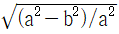
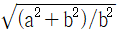
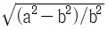
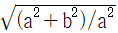
(정답률: 91%)
20. 다음에서 기하학적 측지학에 속하는 것은?
- 수평위치 결정
- 중력 측정
- 지자기 측정
- 탄성파 측정
(정답률: 25%)
2과목: 응용측량
21. 다른 시점에서 합쳐진 작도가 가능할 뿐 아니라 시각성이 유효하여 판단하기 쉬운 장점이 있는 경관예측방법은?
- 비디오 영상에 의한 방법
- 모형에 의한 방법
- 조감도에 의한 방법
- 투시도에 의한 방법
(정답률: 16%)
22. 그림과 같은 삼각형 ABC의 면적을 1:3으로 분할할 경우 P점의 좌표는? (단, 단위는 m이다.)
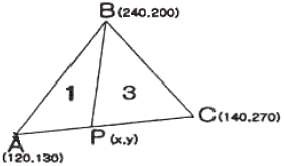
- x=130, y=165
- x=125, y=165
- x=130, y=200
- x=125, y=200
(정답률: 74%)
23. 완화곡선에 대한 설명으로 옳지 않은 것은?
- 완화곡선에서 편경사(cant)는 전 구간에서 일정하게 유지된다.
- 완화곡선의 접선은 시점에서 직선에, 종점에서 원곡선에 접한다.
- 원곡선과 직선부 사이에 위치한다.
- 종류는 클로소이드, 3차 포물선 등이 있다.
(정답률: 46%)
24. 하천측량에서 거리표 설치시 유의할 사항 중 틀린 것은?
- 유심선에 직각으로 1km 거리마다 양안에 설치하는 것을 표준으로 한다.
- 양안의 거리표를 시준하는 선은 유심선에 직교되어야 한다.
- 설치 위치는 망실, 파손 및 변동의 염려가 없고 공사에 지장이 없는 위치로 한다.
- 거리표는 하구나 합류점을 기점으로 한다.
(정답률: 75%)
25. 터널의 갱내측량의 특징에 관한 설명 중 옳지 않은 것은?
- 습기, 먼지, 소음, 어두움 등으로 측량조건이 매우 불량하다.
- 폐합트래버스에 의한 측량이 주로 이루어지므로 누적발생오차를 쉽게 확인할 수 있다.
- 굴착면의 변위발생으로 설치한 기준점의 변형이 일어나기 쉽다.
- 후시의 경우 거리가 짧고 예각 발생의 경우가 많아 오차가 자주 발생한다.
(정답률: 34%)
26. 곡선반경이 300m이고, 궤도 간격이 1067mm 일 때 단곡선의 설계속도를 100km/h로 하기 위한 캔트(cant)는?
- 10cm
- 14cm
- 20cm
- 28cm
(정답률: 알수없음)
27. 노선의 단곡선에서 곡률반경 R=400m, 교각 I=120° 일 때 제2의 중앙종거 M'의 값은?
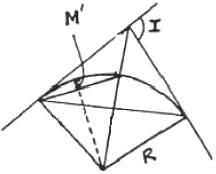
- 200m
- 10m
- 23.6m
- 26.8m
(정답률: 55%)
28. 그림과 같은 삼각형 토지에서 A점으로부터 20m 떨어진 AC상의 한 점 D를 고정점으로 하여 D점으로부터 AB상의 한 점 E를 연결하여 △ABC의 면적을 m:n=2:3으로 분할하고자 한다. AE의 길이는 얼마가 되어야 하는가? (단, AB의 길이는 37m, AC의 길이는 30m이다.)
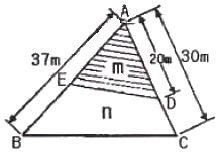
- 9.9m
- 22.2m
- 25.5m
- 33.3m
(정답률: 82%)
29. 체적을 산정하는 방법 중 철도, 도로 및 수로 등을 축조할 때와 같이 보다 정확한 토지의 토공량을 산정하는데 적합한 방법은?
- 점고법
- 등고선법
- 유토곡선법
- 단면법
(정답률: 10%)
30. 지하 3m에 매설되어 있는 PVC상수도관 깊이의 허용탐사 오차는?
- ±1cm
- ±4cm
- ±10cm
- ±40cm
(정답률: 42%)
31. 유량측정 장소 선정시의 만족시킬 조건 중 옳지 않은 것은?
- 측정개소 전후의 유로는 일정한 단면을 가지고 있는 곳이 좋다.
- 합류에 의하여 불규칙한 영향을 받지 않는 곳이 좋다.
- 지질이 연약하여 세굴, 퇴적이 활발한 곳이 좋다.
- 와류와 역류가 생기지 않는 곳이 좋다.
(정답률: 64%)
32. 갱내의 천정에 측점을 그림과 같이 정했을 때 두점의 고저차 H는 얼마인가? (단, 단위는 m이다.)
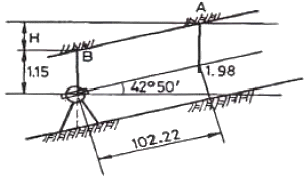
- 75.95m
- 70.33m
- 62.39m
- 50.55m
(정답률: 50%)
33. 노선의 종단경사가 급격히 변하는 곳에서 차량의 충격을 제거하고 시야를 확보하기 위하여 설치하는 것은?
- 수평곡선
- 캔트
- 종단곡선
- 슬랙
(정답률: 25%)
34. 곡선과 그 설치방법에 대한 설명 중 옳지 않은 것은?
- 편각 설치법은 정확도가 높은 결과를 얻을 수 있다.
- 3차 포물선을 고속도로에 가장 많이 이용하는 이유는 자동차의 주행 궤적과 일치하기 때문이다.
- 완화곡선의 반지름은 무한대에서 시작하여 종점에서 원곡선의 반지름이 된다.
- 절선편거에 의한 방법은 테이프만을 사용하므로 정도가 좋지 않다.
(정답률: 25%)
35. 단곡선을 설치하기 위하여 교각 I-90°, 외할 E=10m로 결정하였을 때 곡선 길이(C.L.)는?
- 37.92m
- 38.17m
- 39.92m
- 40.17m
(정답률: 17%)
36. 터널의 준공을 위한 변형조사측량에 해당되지 않는 것은?
- 중심측량
- 고저측량
- 단면측량
- 삼각측량
(정답률: 50%)
37. 용지 측량 순서로 맞는 것은?
- 작업계획→경계확인→면적계산→경계측량→자효조사→용지실측도, 원도 등의 작성
- 자료조사→작업게획→경계측량→면적계산→경계확인→용지실측도, 원도 등의 작성
- 작업계획→자료조사→경계확인→경계측량→면적계산→용지실측도, 원도 등의 작성
- 자료조사→작업계획→경계측량→경계확인→면적계산→용지실측도, 원도 등의 작성
(정답률: 80%)
38. 다음 중에서 하천의 유량관측방법이 아닌 것은?
- 수로 중에 둑을 설치하고 월류량의 공식을 이용하여 유량을 구하는 방법
- 수위유량곡선을 미리 만들어 소요 수위에 대한 유량을 구하는 방법
- 유속계로 직접 유속을 측정하여 평균유속을 구하고 단면적을 측정하여 유량을 구하는 방법
- 유출계수와 강우강도를 구하여 유량을 구하는 방법
(정답률: 28%)
39. 하천측량에서 저수위란 1년을 통하여 몇 일간 이보다 내려가지 않는 수위를 의미하는가?
- 95일
- 135일
- 185일
- 275일
(정답률: 90%)
40. 노면폭 15m의 도로를 설계하기 위하여 그림과 같은 횡단면도를 얻었을 때 필요한 용지폭 B는? (단, a=2m, 경사도는 1:1:5로 한다.)
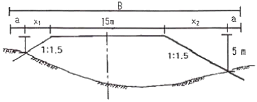
- 18.5m
- 20.1m
- 26.0m
- 29.5m
(정답률: 알수없음)
3과목: 사진측량 및 원격탐사
41. 노점거리 153mm의 사진기로서 촬영고도 2000m의 연직항공사진을 촬영하면 길이 50m의 다리(橋)는 얼마의 길이로 찍히는가?
- 1.8mm
- 2.8mm
- 3.8mm
- 4.8mm
(정답률: 62%)
42. 다음에서 위상정보에 관한 설명으로 틀린 것은?
- 공간상에 존재하는 공간객체의 길이, 면적 등의 계산이 가능하게 한다.
- 공간객체간의 형태(shape)에 관한 정보만을 제공하므로 제반 분석을 매우 빠르게 한다.
- 공간상에 존재하는 객체의 형태(shape), 계급성, 연결성에 관한 정보를 제공한다.
- 다양한 공간분석을 가능하게 한다.
(정답률: 75%)
43. 다음 중 GIS 공간자료교환 표준의 종류가 아닌 것은?
- DIGEST
- NAD
- NTF
- SDTS
(정답률: 74%)
44. 공액조건에 대한 설명으로 틀린 것은?
- 영상정합을 수행할 때 검색범위를 줄여준다.
- 공액면은 2개의 투영중심과 하나의 지상점으로 정의된다.
- 공액선은 공액면과 각각의 영상면과의 교선을 의미한다.
- 하나의 지상점에 대응하는 각각의 영상의 공액선은 서로 평행한다.
(정답률: 82%)
45. 10개의 입체모델로 구성된 스트립에 대하여 기계적 항공삼각 측량을 실시하고자 한다. 이 때 절대표정에 필요한 표정(지상기준점)의 수는?
- 3점
- 7점
- 15점
- 30점
(정답률: 54%)
46. 항공사진의 편위수정(rectification)에 대한 설명으로 옳은 것은?
- 편위수정 작업은 기준점의 좌표를 이용하지 않고도 가능하다.
- 편위수정 작업을 거친 사진은 사진상의 각 점의 상대적 축척이 균일하다.
- 편위수정 작업은 세부도화작업을 하기 위한 필수작업과정이다.
- 편위수정 작업은 실체 도화기로 그 작업을 수행한다.
(정답률: 알수없음)
47. 항공사진측량에 의한 지도제작시 정확도 향상 방법으로 옳지 않은 것은?
- 지상 기준점 밀도를 증가시킨다.
- 성능이 높은 도화기를 사용한다.
- 대축척사진을 이용한다.
- 비행고도를 높인다.
(정답률: 91%)
48. 다음 그림은 6×6화소 크기의 래스터 데이터를 수치적으로 표현한 것이다. 이 데이터를 2×2화소 크기의 데이터로 만들고자 한다. 2×2화소 데이터의 수치값을 결정하는 방법으로 중앙값 방법(Median Method)을 사용하고자 할 때 결과로 옳은 것은?
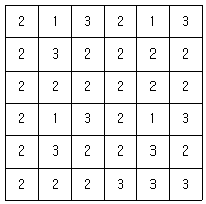
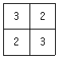
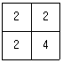
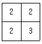
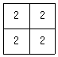
(정답률: 65%)
49. 다음 중 원격탐사 영상의 기하보정을 위한 기하모델로 적당치 않은 것은?
- Affine 변환식
- 주성분 변환식
- Pseudo Affine 변환식
- Helmert 변환식
(정답률: 86%)
50. 사진상의 주점이나 조정점 등을 인접 사진상에 옳기는 작업을 무엇이라 하는가?
- 투영
- 도화
- 표정
- 점이사
(정답률: 75%)
51. 항공사진 도화작업에서 표정(orientation)에 관한 설명으로 틀린 것은?
- 내부표정 - 초점거리의 조정 및 주점의 일치
- 상호표정 - 7개의 표정인자(λ, φ, Ω, K, CX, CY, CZ)
- 절대표정 = 축척, 경사의 조정 및 위치의 결정
- 접합표정 - 모델간, Strip간의 접합요소
(정답률: 77%)
52. 벡터 자료와 비교할 때 래스터 자료에 대한 설명으로 옳지 않은 것은?
- 자료 구조가 단순하다.
- 위상구조로 표현하기 힘들다.
- 스캐닝한 자료는 래스터 구조이다.
- 객체를 점, 선, 면의 형태로 구분하기 쉽다.
(정답률: 17%)
53. 절대표정에서 2개의 표정점 사이의 축척화한 길이가 Sg=366.5mm 이었다. 모델상에서의 측정된 표정점간의 거리 Sm=371.8mm일 때의 기선길이 bx=216.31mm라면 bx의 수정값은?
- 213.33mm
- 214.32mm
- 217.23mm
- 218.32mm
(정답률: 75%)
54. 항공사진판독의 순서가 바르게 나열된 것은?
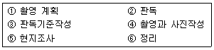
- ①-⑤-③-②-④-⑥
- ①-⑤-④-②-③-⑥
- ①-④-⑤-③-②-⑥
- ①-④-③-②-⑤-⑥
(정답률: 77%)
55. 다음 중 GIS를 사용하여 발생 되는 장점이 아닌 것은?
- 수치데이터로 구축되어 지도 축척의 손쉬운 변환이 가능하다.
- 기존의 수작업으로 하는 작업을 컴퓨터를 이용하여 손쉽게 할 수 있다.
- GIS 데이터는 CAD와 비교하여 데이터의형식이 간단하여 취급이 쉽다.
- 다양한 공간적 분석이 가능하여 도시계획, 환경, 생태 등 다양한 분야에서 의사결정에 활용될 수 있다.
(정답률: 70%)
56. 센서에 대한 해상도 중 관측된 에너지를 얼마나 자세히 정량화하는가를 나타내는 용어로, 기록 bit 수에 평가하는 해상도를 무엇이라 하는가?
- 공간해상도(spatial resolution)
- 분광해상도(spectral resolution)
- 방사해상도(radiometric resolution)
- 주기해상도(temporal resolution)
(정답률: 39%)
57. 다음 중 지형을 시각적으로 표현하는 방법으로 적당하지 않은 것은?
- 음영기복도(shaded relief)
- 등고선
- 표고점
- 3차원지도
(정답률: 70%)
58. 지구좌표의 표시법 중 지구를 회전타원체로 보고 적도를 횡측, 자오선을 종축으로 하며 경도를 6°씩 60개의 종대로 나누고, 위도는 8°씩 20개의 횡대로 나누어 등각투영하는 방법은?
- 물리적 지표 좌표
- 국제 횡메르카토르 좌표
- 평면직교 좌표
- 횡메르카토르 좌표
(정답률: 80%)
59. 초점거리 200mm의 사진기로, 고도 3000m에서 종중복도 60%로 촬영했을 때 실제 촬영기선은 얼마인가? (단, 사진의 크기는 23cm×23cm)
- 320m
- 640m
- 1380m
- 1560m
(정답률: 50%)
60. 다음 중 수치영상의 영상변환 방법이 아닌 것은?
- 푸리에(Fourier) 변환
- 호텔링(Hotelling) 변환
- 발쉬(Walsh) 변환
- 특성(Chaeacter) 변환
(정답률: 84%)
4과목: 지리정보시스템
61. 다음 중 3차원 위치성과를 획득할 수 없는 측량장비는?
- 토탈스테이션
- 레벨
- IIDAR
- GPS
(정답률: 70%)
62. 아래 그림과 같이 수준측량을 실시한 결과 a의 표척눈금이 3.560m, a의 표고 Ha=100.00m이고, b의 표고 Hb=101.110m이었다. b점의 표척 눈금은? (단, 단위는 m이다.)
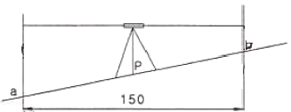
- 1.245m
- 2.450m
- 3.000m
- 3.004m
(정답률: 62%)
63. 망원경을 정(正) 미 반(反)으로 수평각관측을 행한 경우 그 산술평균각을 얻음으로써 소거되는 오차로 짝지어진 것은?
- 수평축 오차, 연직축 오차, 시준축 오차
- 수평축 오차, 망원경 편심 오차, 시준축 오차
- 연직축 오차, 시준축 오차, 망원경 편심 오차
- 연직축 오차, 망원경 편심 오차, 수평축 오차
(정답률: 80%)
64. 그림과 같은 삼각점의 선점도에서 신점(구점)을 ○, 여점(기지점)을 ◎라 하면, 신점의 위치는 3~4개의 여점에서 평균계산(조정)을 행한다. 평균계산의 방향이 화살표와 같을 때 가장 마지막으로 계산(조정)되는 것은?
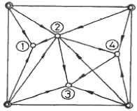
- ① 점
- ① 점
- ③ 점
- ④ 점
(정답률: 알수없음)
65. 오차의 종류 중 확률론과 최소제곱법으로 소거해야 하는 오차는?
- 과오
- 부정오차
- 정오차
- 기계오차
(정답률: 70%)
66. 레벨의 조정 사항으로 옳은 것은?
- 연직축과 시준축을 평행하게 할 것
- 기포관 축과 연직축을 평행하게 할 것
- 망원경의 배율을 항상 일정하게 할 것
- 기포관 축과 시준축을 평행하게 할 것
(정답률: 25%)
67. A점(500.00m, 300.00m)과 B점(326.79m, 400.00m) 사이의 BA의 방위각은 약 얼마인가?
- 150° 00‘00“
- 330° 00‘00“
- 120° 00’00”
- 300° 00‘00“
(정답률: 64%)
68. 직육면체인 저수탱크의 용적을 구하고자 한다. 밑변 a, b와 높이 h에 대한 측정결과가 다음와 같을 때 용적오차는?
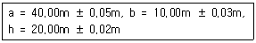
- ±10m3
- ±21m3
- ±27m3
- ±34m3
(정답률: 64%)
69. 점간의 고저차를 구하기 위하여 경사거리 30.0m±20cm, 경사각 15° 30‘의 값을 얻었다. 경사거리와 경사각이 고저차 결정의 독립변수로 작용할 때 고저차의 오차는?
- ±5.3cm
- ±10.5cm
- ±15.8cm
- ±27.6cm
(정답률: 알수없음)
70. 트래버스의 조정법에 대한 설명 중 옳게 설명한 것은?
- 각측량의 정밀도가 거리측량의 정밀도보다 높을 때는 컴퍼스법칙으로 조정한다.
- 트랜싯법칙과 컴퍼스법칙은 모두 엄밀법에 의한 트래버스 조정방법이다.
- 폐합오차 및 폐합비를 계산하여 허용범위 내에 있을 경우에만 조정계산한다.
- 각 측선의 길이에 비례하여 폐합오차를 조정하는 방법이 트랜싯법칙이다.
(정답률: 27%)
71. 다음의 수준측량결과에 따른 No.3점의 지반고는?
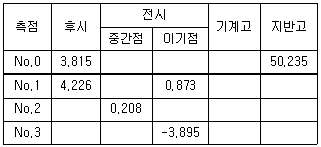
- 61.298m
- 61.090m
- 53.508m
- 53.300m
(정답률: 46%)
72. 지형도를 작성하기 위한 방법에 대한 설명으로 틀린 것은?
- 토탈스테이션에 의해 현장에서 지형도를 작성한다.
- 항공사진측량에 의해 사진촬영을 한 후 실내에서 지형도를 작성한다.
- SPOT 위성과 같은 입체 촬영이 가능한 위성자료를 이용하여 지형도를 작성한다.
- GPS측량을 이용한 영상판독에 의해 지형도를 작성한다.
(정답률: 64%)
73. 그림과 같이 점A에서 출발하여 점B에 연결하는 결합 트래버스 측량을 실시하여 다음과 같은 결과를 얻었다면 폐합비는 약 얼마인가? (단, Si=각 축선의 거리, ai=각 측선의 방위각)
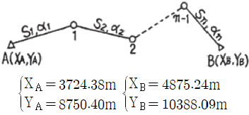
- 1/4,000
- 1/5,000
- 1/6,000
- 1/7,000
(정답률: 34%)
74. 노선거리 16km인 두 점 간의 수준차를 직접 수준측량에 의해 측량한 표준오차가 ±20mm이라면 1km 당 표준오차는?
- ±0.625mm
- ±1.25mm
- ±2.50mm
- ±5.00mm
(정답률: 70%)
75. 그림과 같이 삼각측량을 실시하였다. 이때 P점의 좌표는? (단, Ax=81.847m, Ay=30.460m, θAB=163° 20'00", ∠BAP=60°,
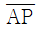
=600.00m)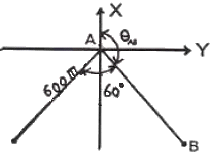
- Px=-354.577m, Py=-442.2⑤m
- Px=-466.884m, Py=-329.898m
- Px=-466.884m, Py=-442.2⑤m
- Px=-354.577m, Py=-329.898m
(정답률: 62%)
76. 광파기(거리측정기)의 기계정수를 검사하기 위해 아래 그림과 같이 거리를 측정하였다. 기계정수 K를 구하는 방법은?
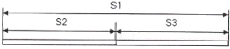
- K=S1-(S2+S3)
- K=(S1+S2+S3)/S1
- K=(S2+S3)/S1
- K=S1(S2+S2)
(정답률: 70%)
77. 다음의 거리관측방정식
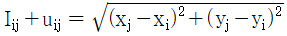
에 대한 설명 중 틀린 것은? (단, Iij는 I, J 지점의 관측거리, uij 지점의 관측값에 대한 잔차를 나타낸다.)- GPS 등의 위치결정원리에 이용된다.
- 거리관측방정식은 xi, yi, xj, yj를 포함하는 비ᅟᅥᆫ형함수로 이루어져 있다.
- 비선형방정식은 테일러(Taylor) 급수전개를 통해서 선형화 할 수 있다.
- 거리관측방정식은 삼각측량에 주로 이용된다.
(정답률: 64%)
78. 축척 1:25000 지형도에서 100m 등고선 상의 점과 120m 등고선 상의 점 간에 도상거리 20mm을 얻었다. 이 때 두 점의 경사각은 얼마인가?
- 2° 14‘ 26“
- 2° 18‘ 38“
- 16° 17‘ 15“
- 20° 17‘ 42“
(정답률: 37%)
79. 축척 1:25000의 지형측량에서 측점의 높이오차가 2.5m일 때 그 측점을 지나는 도상 등고선의 위치오차는? (단, 지점의 경사각은 1°)
- 약 4mm
- 약 6mm
- 약 10mm
- 약 15mm
(정답률: 34%)
80. 등고선의 특성에 관한 설명으로 옳은 것은?
- 최대 경사선은 등고선과 직각 방향이다.
- 높이가 다른 등고선은 절대 만나지 않는다.
- 등고선은 지도 안에서 폐합되지 않으면 지도의 밖에서도 만나지 않는다.
- 동일 등고선은 같은 높이지만 특수한 경우 높이가 다를 수도 있다.
(정답률: 10%)
5과목: 측량학
81. 다음 중 측량법상 지도라 할 수 없는 것은?
- 수치지형도
- 정사영상지도
- 수치주제도
- 항해용도의 해도
(정답률: 70%)
82. 공공측량에 관한 설명으로 잘못된 것은?
- 선행된 공공측량의 성과를 기초로 측량을 실시할 수 있다.
- 선행된 기본측량의 성과를 기초로 측량을 실시할 수 있다.
- 공공측량의 측량성과를 교부 받고자 하는 자는 국토지리정보원장에게 신청하여야 한다.
- 공공측량의 측량성과를 실시하기 위하여 타인의 토지나 건물 등에 출입하고자 하는 자는 그 권한을 표시하는 증표를 지니고 관계인에게 제시하여야 한다.
(정답률: 알수없음)
83. 공공측량 측량성과의 고시사항에 포함되지 않는 것은?
- 측량의 종류
- 측량의 정확도
- 측량성과의 보관장소
- 측량성과의 보존기간
(정답률: 46%)
84. 측량법 중 200만원 이하의 과태료 벌칙에 해당되는 것은?
- 다른 사람의 견적 제출을 방해한 자
- 기본측량 성과를 고의로 사실과 다르게 상이하게 한 자
- 성능검사를 부정하게 한 자
- 정당한 사유없이 토지ㆍ죽목ㆍ건물 기타 공작물의 일시사용을 거부한 자
(정답률: 70%)
85. 다음 중 측량기기 성능검사 방법의 구분으로 잘못된 것은?
- 분해검사
- 외관검사
- 구조ㆍ기능검사
- 측정검사
(정답률: 86%)
86. 공공측량으로 인한 손실의 보상은 그 측량계획기관의 장이 손실을 받은 자와 협의하여 행하되 협의가 성립되지 아니할 경우는 계획기관 또는 손실을 받은 자가 관할토지수용위원회에 재결신청서를 제출하는 데 이 신청서의 내용에 포함되는 사항이 아닌 것은?
- 재결의 신청자와 상대방의 성명 및 주소
- 손실 발생의 사실
- 협의의 내용
- 손실자의 학력 등 개인 인적 사항
(정답률: 80%)
87. 다음 일반측량 중 공공측량으로 지정할 수 있는 것은?
- 측량실시지역의 면적이 1km2 이상의 삼각측량
- 측량노선의 길이가 5km 이상인 수준측량
- 측량노선의 길이가 1km 이상인 다각측량
- 촬영지역의 면적이 500m2 이상인 측량용 사진의 촬영
(정답률: 10%)
88. 측량업의 등록을 취소하거나 1년 이내의 기간을 정하여 영업의 정지를 명할 수 있는 경우가 아닌 것은?
- 고의로 인하여 측량을 부정확하게 한 때
- 정당한 사유없이 1년동안 영업을 하지 않은 때
- 과실로 인하여 측량을 부정확하게 한 때
- 측량업의 등록기준에 미달하게 된 때
(정답률: 64%)
89. 다음 중 영구표지에 해당되는 것은?
- 측표
- 표기
- 검조의
- 측량표지막대
(정답률: 84%)
90. 다음은 기본측량의 실시 공고에 관한 사항으로 옳지 않은 것은?
- 일간신문에 1회 이상 게재하거나 해당 특별시ㆍ광역시ㆍ도 또는 특별자치도의 게시판 및 인터넷홈페이지에 7일 이상 게시하여야 한다.
- 국토해양부장관은 미리 측량지역 및 기간, 기타 필요한 사항을 시ㆍ도지사에게 통지하여야 한다.
- 국토해양부장관으로부터 기본측량 실시 통지를 받은 시ㆍ도지사는 시장ㆍ군수 또는 구청장에게 이를 통지하여야 한다.
- 시장ㆍ군수 또는 구청장은 실시 공고를 알맞은 방법에 의해 게시하여야 한다.
(정답률: 54%)
91. 지도의 내도곽 안쪽에 표시되는 것으로 옳은 것은?
- 도엽명, 도엽번호
- 인쇄연도 및 축척
- 발생자 및 편집연도
- 지물 및 지형
(정답률: 74%)
92. 기본측량에 대한 설명으로 잘못된 것은?
- 국토지리정보원장은 년간 계획을 수립한다.
- 모든 측량의 기초가 되는 측량이다.
- 국토해양부장관이 실시한다.
- 기본측량에 종사하는 자는 측량을 실시하기 위하여 필요한 때에는 타인의 토지나 건물에 출입할 수 있다.
(정답률: 46%)
93. 지도의 주기(註記)원칙으로 틀린 것은?
- 자획이 복잡한 한자에 있어서는 알기 쉬운 약자로 표시할 수 있다.
- 문자의 크기 등에 관한 사항은 국토지리정보원장이 정한다.
- 문자는 한글, 한자, 영자 및 아라비아숫자로서 표기한다.
- 한글, 한자는 고딕체를 사용한다.
(정답률: 84%)
94. 측량업자인 법인이 파산 또는 합병 외의 사유로 해산한 때에는 그 청산인이 국토해양부장관 또는 시ㆍ도지사에게 그 사실을 신고하여야 하는데, 이 때 그 사유가 발생한 날로부터 최대 몇 일 이내에 신고를 하여야 하는가?
- 60일
- 30일
- 20일
- 10일
(정답률: 알수없음)
95. 측량업의 종류에 해당되지 않는 것은?
- 연안조사측량업
- 영상처리업
- 지하시설물측량업
- 항공지도제작업
(정답률: 20%)
96. 1:5000 지형도에서 지물을 표시할 경우 평면위치의 전위(轉位) 제한은?
- 0.7mm 이내
- 1mm 이내
- 5mm 이내
- 1mm 이내
(정답률: 67%)
97. 국토해양부장관ㆍ국토지리정보원장 또는 시ㆍ도지사는 어떠한 처분을 하고자 하는 경우에는 청문을 실시하여야 한다. 처분에 해당하지 않는 것은?
- 관련 규정 위반에 따른 성능검사대행자 등록의 취소
- 관련 규정 위반에 따른 지도판매대행자 지정의 취소
- 관련 규정 위반에 따른 측량업 등록의 취소
- 관련 규정 위반에 따른 측량기술자 경력의 취소
(정답률: 알수없음)
98. 국토해양부장관 또는 시ㆍ도지사는 규정에 의하여 과태료를 부과하고자 하는 경우에는 최소 몇 일 이상의 기간을 정하여 과태표처분대상자에게 구술 또는 서명에 의한 의견진술 기회를 주어야 하는가?
- 7일
- 10일
- 14일
- 30일
(정답률: 28%)
99. 다음 용어의 정의 중 잘못된 것은?
- 측량계획기관이라 함은 모든 측량에 관한 계획을 수립하는 자를 말한다.
- 측량성과라 함은 당해 측량에서 얻은 최종성과를 말한다.
- 측량업자라 함은 측량법이 정하는 바에 따라 등록을 하여 측량업을 영위하는 자를 말한다.
- 발주자라 함은 측량용역을 측량업자에게 도급을 주는 자를 말한다.
(정답률: 10%)
100. 시ㆍ도지명위원회는 지명에 관한 심의, 결정사항을 최대 몇 일 이내에 중앙지명위원회에 보고하여야 하는가?
- 15일 이내
- 10일이내
- 7일 이내
- 30일 이내
(정답률: 55%)
GDOP = sqrt(trace(Q-1))
여기서 trace(Q-1)은 Cofactor 행렬의 역행렬의 대각선 요소의 합을 의미한다. 따라서, Q의 역행렬을 계산하면 다음과 같다.
Q-1 = [ 2.000 -0.455 -0.455 -0.308 ]
[ -0.455 0.455 0.000 0.000 ]
[ -0.455 0.000 0.400 0.000 ]
[ -0.308 0.000 0.000 0.769 ]
따라서, trace(Q-1) = 3.609 이므로 GDOP는 3.609이 된다. 따라서, 정답은 "3.609"이다.